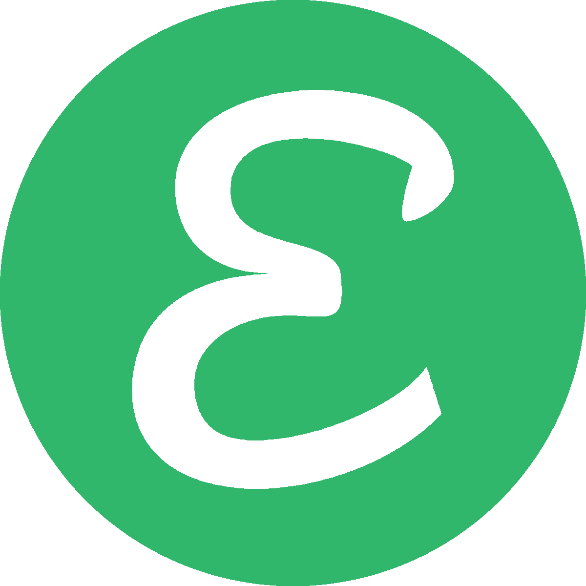
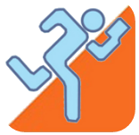
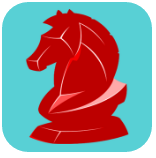
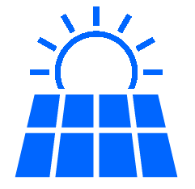

PORTFOLIO
EatWise Android / iOS App
EatWise is a reference app for finding medicinal foods associated with health interests, conditions, and symptoms that is reference-based with a simple, modern user interface. I developed all aspects of EatWise from the app itself to the homepage to the backend.
Web Development for iamheart.org
Over the years I have provided web development and system administration services to The Institute for Applied Meditation. Services offerred have included HTML, JavaScript, CSS3, Ruby, and PHP development. I also assisted with security PCI compliance of OSX Apache backend systems, Facebook pixel and Google AdWords conversion tracking marketing changes, and integration with Constant Contact.
Orienteering GPS Logger iOS App
This is a free and open source app developed for orienteering field exercises. It uses high acurracy GPS tracking and functions even when the iOS device is screen locked.
Chess Opening Explorer C++ / iOS App
This is a native iOS app in the chess space. I ported an open source C++ chess engine called Stockfish to iOS. It allows for exploration of chess openings with a chess engine far stronger than any human player in real–time on a mobile device.
Lama Foundation Solar System Upgrades
During my tenure at the Lama Foundation, I maintained a 100% off-the-grid solar system. Improvements I introduced were a new backup generation system, tracking of energy consumption with watt meters, and changes of policy for recommendations of devices allowed for energy use.